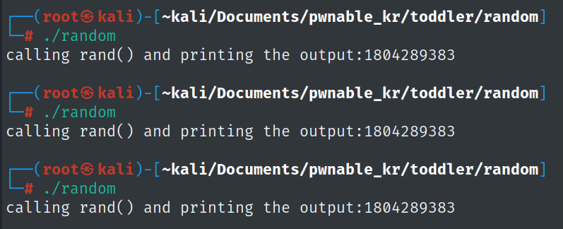

looking at the source code of random.c:

rand() gives a pseudo-random number
this number is fixed and will repeat itself everytime called
also, this number changes between workspeaces.
as can be seen below, rand() repeats itself.

the "^" operator is XOR bitwise operator in C
for bitwise XOR:
a^b=c
c^b=a
c^a=b
and the order dosent matters.
in our case, we are asked by IF statment about the following equation:
(key ^ random) == 0xdeadbeef
if we know random, we can bitwise XOR it with 0xdeadbeef to find the key we are looking for
0xdeadbeef ^ random = key
the only "problem" is finding random.
luckly, pwnable allows us to play around in local /tmp/our_name folder
in the temp folder, we will use vi editor to create a simple script and execute it
to exit vi press: esc, ":wq", enter

this is the script:

when executed, we will get the pseudo-random number that we are looking for:

0x6B8B4567 ^ 0xDEADBEEF = 0xB526FB88
converting 0xB526FB88 to unsigned long int = 3039230856
solving: